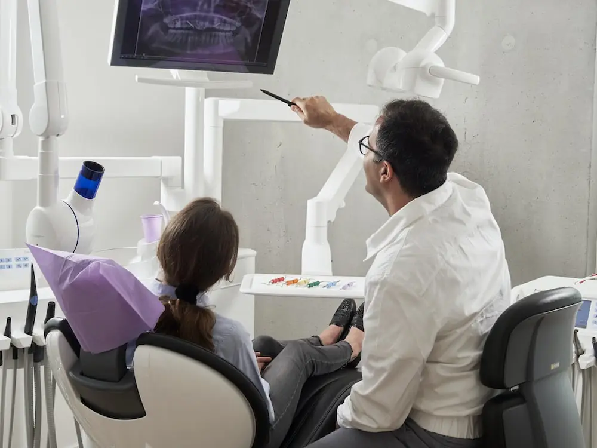

Band 1
£27.90Check-up, examination and X-rays, or urgent and unscheduled care.
Monday to Friday, 9am–5pm
Dentist in Collier Row · NHS & independent
A highly qualified, experienced team offering all-round modern dentistry in a friendly, relaxed setting, with specialist orthodontic and root canal care under the same roof.
01 / The practice
Our aim is to provide the very best all-round care that modern dentistry has to offer, while remaining true to the family-centred values on which the practice was founded.

02 / Care
A highly qualified, experienced team in a friendly, relaxed setting, with the latest equipment in a ground-floor practice.
Check-ups, fillings and preventive care for children and adults, with dentists who enjoy treating young patients.
Orthodontics and root canal treatment from clinicians who focus on them.
Sedation services are available. Ask the team which options suit you.
03 / Treatments
From routine check-ups to implants and specialist orthodontics.
04 / Specialist care
Many patients are referred to us by their own dentist. We treat on the NHS where eligible, and independently.
Aesthetic braces, near-invisible aligners and lingual braces. Dr Amish Patel is on the specialist register for orthodontics.
Orthodontics and NHS patientsOur two endodontists' practice is limited to root canal treatment. Treatment takes around 60 to 90 minutes and may need more than one visit.
Root canal treatmentReferred for NHS orthodontics? What happens next
Your dentist refers you for an NHS orthodontic assessment. There is currently a long waiting list.
When you come off the waiting list, we contact you to arrange your assessment.
Active treatment is unlikely at this visit. Plans are discussed at later appointments, after further investigations.
If accepted and you go ahead, you commit to frequent appointments, including in work or school time.
Eligibility. The NHS has strict criteria for funded orthodontics and not every referral qualifies. Patients who do not qualify can choose independent treatment.
For referring dentists. We accept NHS and private referrals for orthodontic and endodontic treatment. Referral information
05 / The team
General dentists, a specialist orthodontist and two endodontists, working together in one practice.
06 / Prices
From April 2026. You pay one charge for each course of treatment, even if it needs more than one visit. Prices and exemptions
Check-up, examination and X-rays, or urgent and unscheduled care.
Everything in Band 1, plus fillings, extractions and deep scaling.
Treatment that needs lab work, such as crowns and dentures.
07 / Visit
Monday to Friday, 9am–5pm
Next scene
Call the practice and the reception team will find a time that suits you.